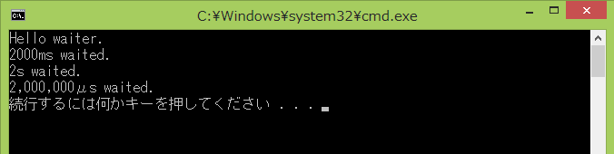

c++ 標準で sleep が加わりました。これでWindowsのsleepを使用せず、標準だけで組めます。
sleep_until を使ってみます。
参考URL： http://ja.cppreference.com/w/cpp/thread/sleep_until
#include "stdafx.h"
#include <iostream>
#include <string>
#include <chrono> // chrono::seconds, chrono::milliseconds, chrono::microseconds
// chrono::system_clock::now
#include <thread> // sleep_until
using namespace std;
int _tmain(int argc, _TCHAR* argv[])
{
cout << "Hello waiter." << endl;
{
std::chrono::milliseconds dura(2000); // 2000ms
std::chrono::system_clock::time_point now = std::chrono::system_clock::now();
std::this_thread::sleep_until( now + dura );
cout << "2000ms waited." << endl;
}
{
std::chrono::seconds dura(2); // 2s
std::chrono::system_clock::time_point now = std::chrono::system_clock::now();
std::this_thread::sleep_until( now + dura );
cout << "2s waited." << endl;
}
{
std::chrono::microseconds dura(2000000); // 2000,000μs
std::chrono::system_clock::time_point now = std::chrono::system_clock::now();
std::this_thread::sleep_until( now + dura );
cout << "2,000,000μs waited." << endl;
}
return EXIT_SUCCESS;
}
実行結果：

本ページの情報は、特記無い限り下記 MIT ライセンスで提供されます。
|
MIT License Copyright (c) 2012-2022 Kinoshita Hidetoshi Permission is hereby granted, free of charge, to any person obtaining a copy of this software and associated documentation files (the "Software"), to deal in the Software without restriction, including without limitation the rights to use, copy, modify, merge, publish, distribute, sublicense, and/or sell copies of the Software, and to permit persons to whom the Software is furnished to do so, subject to the following conditions: The above copyright notice and this permission notice shall be included in all copies or substantial portions of the Software. THE SOFTWARE IS PROVIDED "AS IS", WITHOUT WARRANTY OF ANY KIND, EXPRESS OR IMPLIED, INCLUDING BUT NOT LIMITED TO THE WARRANTIES OF MERCHANTABILITY, FITNESS FOR A PARTICULAR PURPOSE AND NONINFRINGEMENT. IN NO EVENT SHALL THE AUTHORS OR COPYRIGHT HOLDERS BE LIABLE FOR ANY CLAIM, DAMAGES OR OTHER LIABILITY, WHETHER IN AN ACTION OF CONTRACT, TORT OR OTHERWISE, ARISING FROM, OUT OF OR IN CONNECTION WITH THE SOFTWARE OR THE USE OR OTHER DEALINGS IN THE SOFTWARE. |
| 2022-09-13 | - | ページデザイン更新 |
| 2012-12-09 | - | 新規作成 |